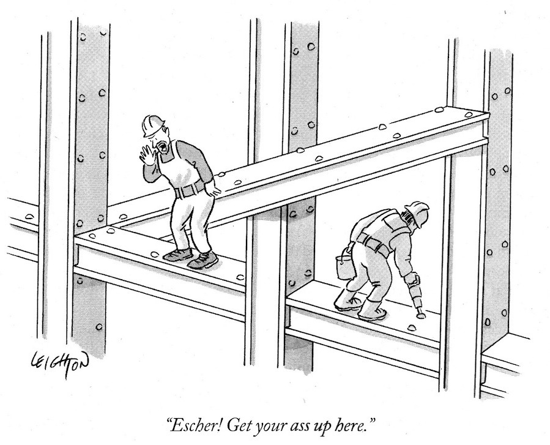

James is an extensive java framework for solving combinatorial optimization problems using metaheuristics. The framework is mainly focused on subset selection, with applications in many areas, though other types of problems can also easily be plugged in.
The homepage of the James framework is currently under construction. Please come back later for detailed information and examples on how to use the framework. You can already view the source code on GitHub.
 cartoon by Robert Leighton